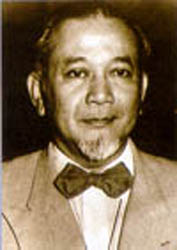

| Nama lengkap | : Achmad Subardjo |  |
| Alias | : Achmad Soebardjo|Raden Achmad Soebardjo Djojoadisoerjo | |
| Agama | : Islam | |
| Tempat lahir | : Karawang, Jawa Barat, Indonesia | |
| Tanggal Lahir | : Senin, 23 Maret 1896 | |
| Zodiak | : Aries | |
| Warga Negara | : Indonesia | |
| Relation | : - |
Raden Achmad Soebardjo Djojoadisoerjo adalah Menteri Luar Negeri Pertama Indonesia, ia mempunyai gelar Meester in de Rechten yang diperoleh dari menempuh pendidikannya di Universitas Leiden, Belanda setelah sebelumnya menempuh pendidikan di Hogere Burger School, Jakarta (saat ini setara dengan Sekolah Menengah Atas). Lahir di Karawang, Jawa Barat pada 23 Maret 1896.
Nama Achmad Soebardjo adalah nama pemberian ibunya setalah sebelumnya ia mempunyai nama Teuku Muhammad Yusuf, pemberian dari ayahnya yang masih mempunyai keturunan bangsawan Aceh dari Pidie, nama belakang Djojoadisoerjo ia tambahkan sendiri saat dewasa.
Bersama Mohammad Hatta, ia menjadi perwakilan Indonesia untuk menghadiri persidangan antar bangsa "Liga Menentang Imperialisme dan Penindasan Penjajah" yang pertama di Brussels dan kemudian di Jerman. Sekembalinya di Indonesia, Achmad Soebardjo yang pernah aktif dalam organisasi Jong Java melanjutkan perjuangannya dengan menjadi anggota organisasi Badan Penyelidik Usaha Persiapan Kemerdekaan Indonesia (BPUPKI), dan Panitia Persiapan Kemerdekaan Indonesia (PPKI).
Di kediaman Laksamana Muda Maeda, ia juga ikut serta dalam menyusun naskah proklamasi bersama Soekarno dan Muhammad Hatta yang kemudian naskah tersebut diketik oleh Sayuti Melik. Pada tanggal 18 Agustus 1945 ia dilantik sebagai Menteri Luar Negeri, itu menjadikannya Menteri Luar Negeri pertama di Republik Indonesia. Ia juga menjadi Duta Besar di Switzerland antara tahun 1957 - 1961.
Dalam usia 82 tahun, di Rumah Sakit Pertamina, Kebayoran Baru, ia mengembuskan napas terakhir dikarenakan flu yang menimbulkan komplikasi. Yang kemudian dimakamkan di Cipayung, Bogor. Pada tahun 2009 pemerintah mengangkatnya sebagai Pahlawan Nasional.
- Hogere Burger School, Jakarta
- Universitas Nasional Indonesia
- Pahlawan Nasional Indonesia
| Klik Gambar Dibawah Ini Untuk Kembali Ke Web Soekarno |
|
|